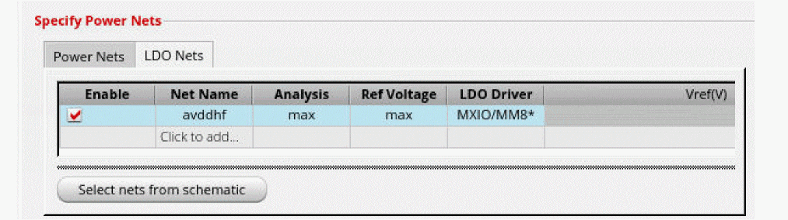
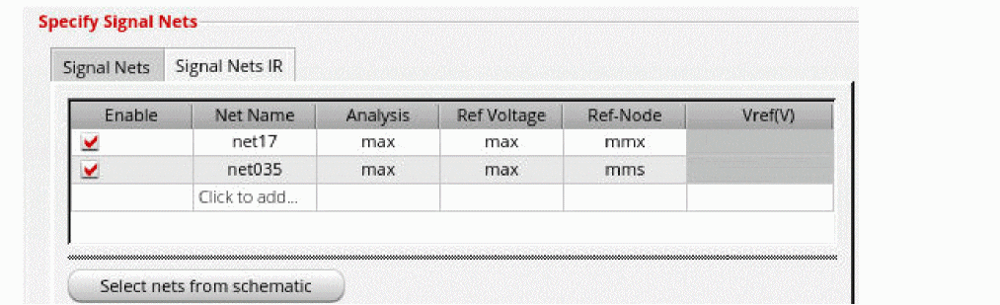

Performing IR Analysis for LDOs, Voltage Regulators, and Generators
IR analysis is typically applied to power nets that are driven by constant voltage sources. However, designs may have low dropout (LDO) nets, internal generators or regulators. For these nets, IR drop analysis may be important. These nets behave like signal nets since their voltage value changes over time.
Voltus-XFi allows you to perform IR drop analysis on such nets. However, you need to define the reference voltage being used for the IR drop calculation.
To include LDO nets for a dynamic IR analysis run:
- Choose Setup – Analyses from the task pane.
- Select a dynamic analysis run for which you want to specify the LDO nets.
-
On the Power Nets tab, click the LDO Nets tab.
 - Select Click to add to manually add the LDO net names or click Select nets from schematic to select the nets in the schematic.
-
In this table, you can specify the following:
- Analysis - Compute node maximum or average IR drop compared to reference.
- Ref Voltage - Use either maximum voltage of all nodes at each timepoint, average voltage of all nodes at each timepoint, minimum voltage of all nodes at each timepoint, or specified voltage value as reference to calculate IR drop.
- LDO Driver - Use specified node of net as reference.
- Vref - Use the specified voltage reference value.
- Click OK.
To include the signal nets that are not connected to any constant voltage source for a dynamic IR analysis run:
- Choose Setup – Analyses from the task pane.
- Select a dynamic analysis run for which you want to specify the nets.
-
On the Signal Nets tab, click the Signal Nets IR tab.
 - Select Click to add to manually add the net names or click Select nets from schematic to select the nets in the schematic.
-
In this table, you can specify the following:
- Analysis - Compute node maximum or node average or node absolute average IR drop compared to reference.
- Ref Voltage - Use either maximum voltage of all nodes at each timepoint, average voltage of all nodes at each timepoint, net pin node, or specified voltage value as reference to calculate IR drop.
- Ref-Node - Use specified node of net as reference.
- Vref - Use the specified voltage reference value.
- Click OK.
When you specify the LDO and signal nets IR, these options get automatically added in the emir.config file.
The following is an example of the EMIR control file (emir.config):
* ----------------------
* LDO NETS
* ----------------------
net name = [I0.*] analysis=[vmax]
solver ldo_net=[I0.*] ldo_driver=[mm] ldo_vref=[max]
In the above example, the IR drop analysis is performed for all LDO nets IO.*. The node mm is used as reference, and the maximum voltage of all nodes at each timepoint is picked as the reference voltage.
* ----------------------
* SIGNAL NETS IR
* ----------------------
net name = [I0.*] analysis=[sigvmax] reftype=max refnode=[mmx]
In the above example, the signal net IR drop analysis is performed for all nets IO.*. The maximum IR drop for the sub nodes of each net is reported. For the IR drop analysis at each net and time point, the sub node with the highest voltage is picked as the reference voltage and the reference voltage from the reference node mmx.
When using reftype=[max] for a net with three sub nodes: net1_1 (1V), net1_2 (2V), and net1_3 (3V), the detected reference voltage will be 3V, and the IR drop calculated will be 2V for net1_1, 1V for net1_2, and 0V for net1_3. When using reftype=[avg] the reference voltage will be 2V, and the IR drop calculated will be 1V for net1_1, 0V for net1_2, and -1V for net1_3.
In addition, if net1_2 is driven by a vsource and findsrc has been specified as yes, the voltages of net1_2, at all time points, will be used as the reference voltages.
Related Topics
Return to top